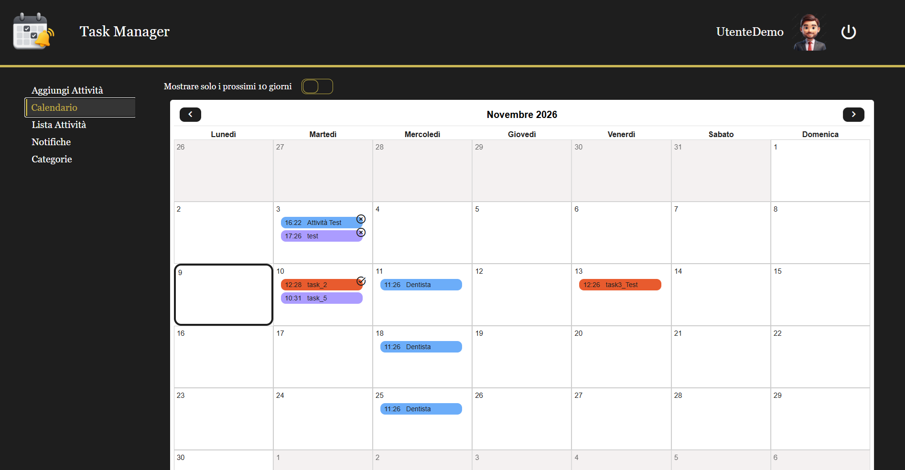
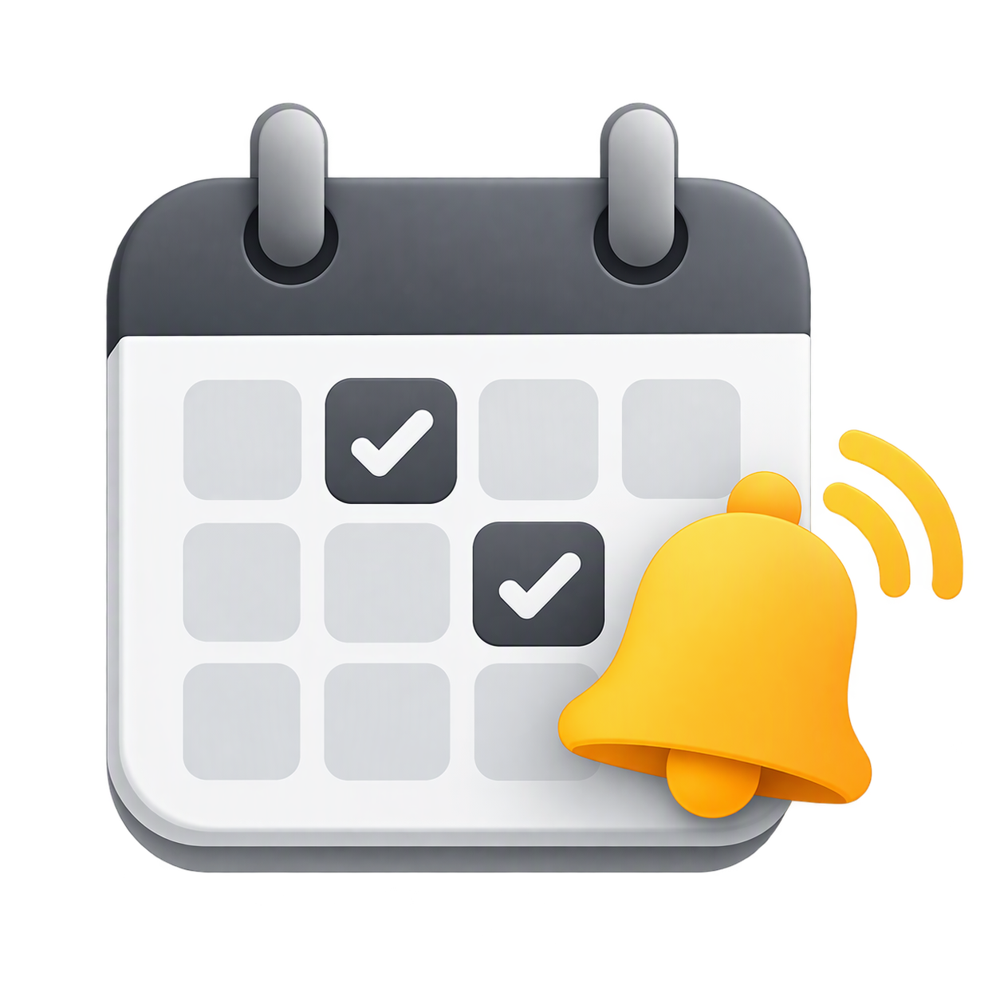
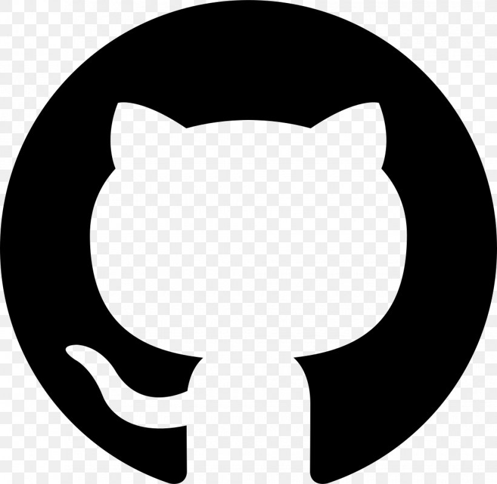
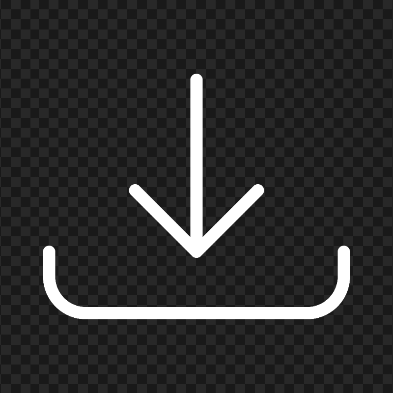
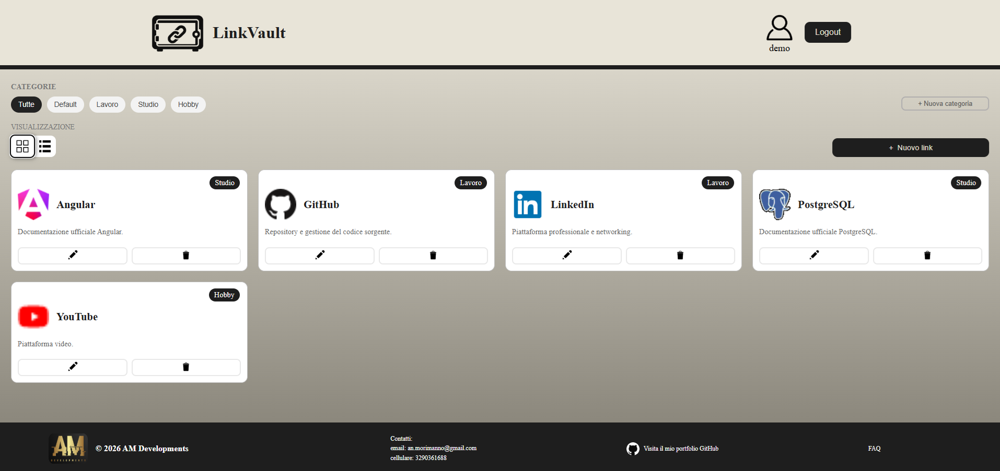
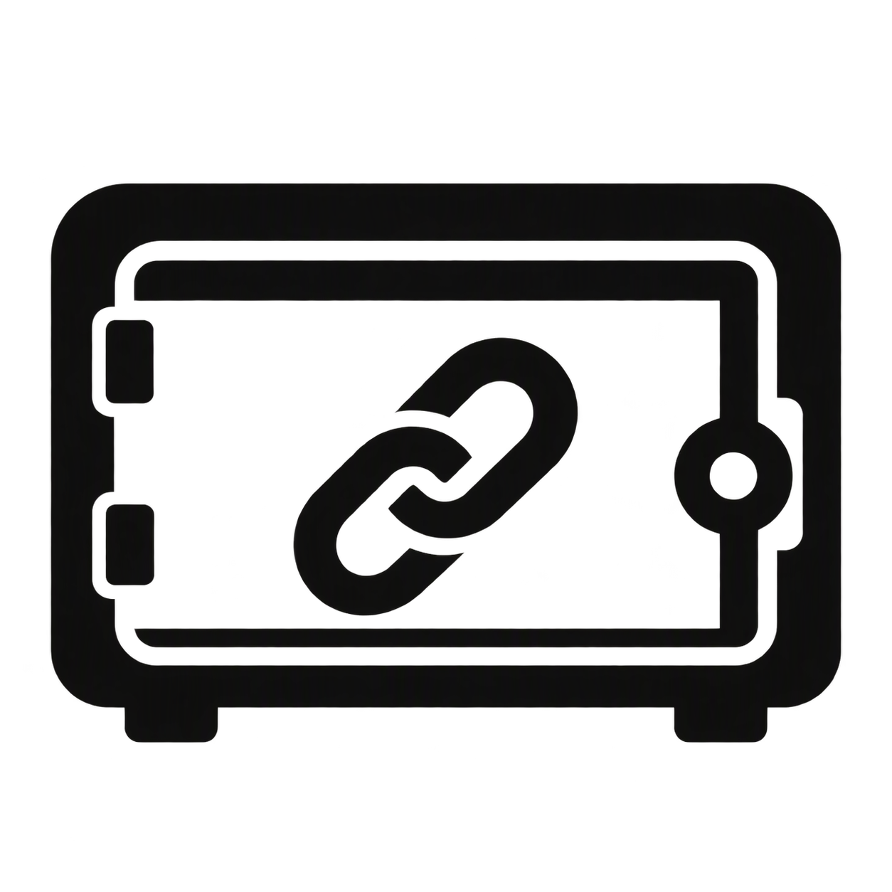
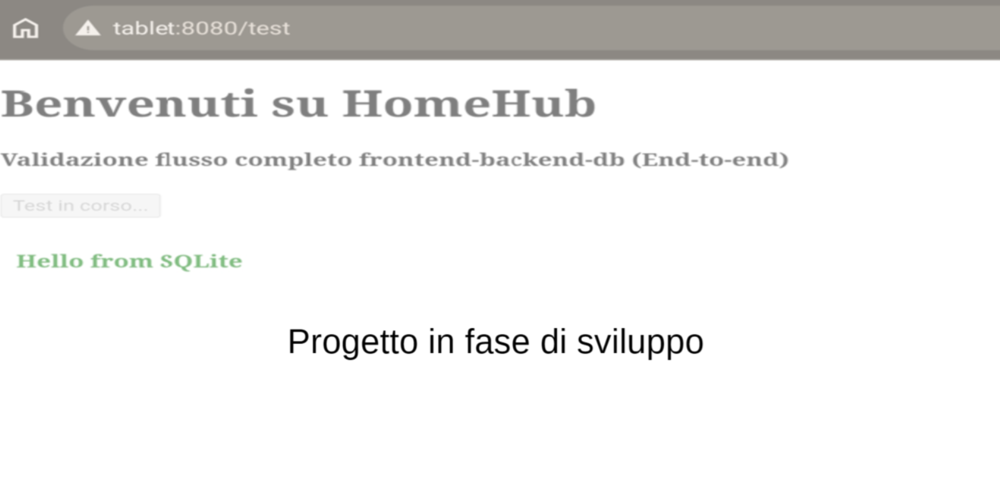
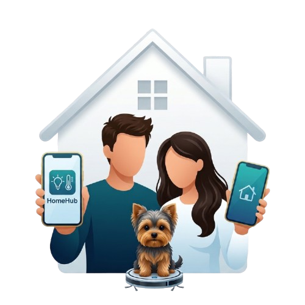

Descrizione
Dopo aver intrapreso un percorso universitario in un ambito completamente diverso, nel 2021 ho deciso di interrompere gli studi e cogliere
l'opportunità di lavorare nel settore informatico, consapevole di dover ripartire da zero.
Giorno dopo giorno ho colmato le mie lacune con curiosità e impegno, alimentando un processo di apprendimento continuo che ancora oggi sostiene
la mia voglia di crescere e migliorare.
Inizialmente mi sono occupato di attività di software testing, per poi passare alla gestione di piattaforme API Gateway
basate prima su WSO2 API Manager e successivamente su GovWay.
Parallelamente, ho intrapreso un percorso di studio autonomo sulle basi della programmazione, approfondendo in particolare
il linguaggio JavaScript, scelto come punto di partenza per avvicinarmi allo sviluppo full-stack.
I progetti presenti in questo portfolio sono stati sviluppati seguendo un percorso di apprendimento progressivo, utilizzando
ogni nuova esperienza progettuale come un'opportunità per ampliare il mio bagaglio tecnico.
Partendo dalle competenze full-stack acquisite, ho progressivamente approfondito la progettazione architetturale, la
containerizzazione e lo sviluppo Android, con l'obiettivo di sperimentare tecnologie e approcci differenti.
I Miei Progetti


Task Manager
Task Manager è un'applicazione desktop progettata per la gestione, la pianificazione e il monitoraggio delle attività
personali, senza necessità di dipendere da servizi esterni o piattaforme cloud.
È possibile creare fino a 4 profili distinti, ciascuno caratterizzato da una gestione indipendente delle proprie categorie e
delle proprie attività. I profili non richiedono autenticazione e sono pensati per consentire una distinzione tra diverse tipologie di
profilo, come ad esempio personale e lavoro, oppure semplicemente tra familiari e conviventi.
Il sistema integra inoltre un meccanismo di notifiche Windows che permette di ricevere promemoria relativi alle attività,
indipendentemente dal profilo selezionato in quel momento.
Avatar e suono delle notifiche possono essere personalizzati seguendo le indicazioni disponibili nelle FAQ dell'applicazione.

Vai al Repository
Scarica installer Windows (64 bit)Focus del progetto
Applicazione desktop: cura nell'interfaccia utente, distribuzione locale e portabilità dei dati
Descrizione e scelte progettuali
Il progetto è stato sviluppato con l'obiettivo di realizzare un'applicazione desktop installabile ed eseguibile localmente,
approfondendo lo sviluppo full-stack nell'ecosistema JavaScript/TypeScript e l'integrazione tra tecnologie web e
funzionalità native del sistema operativo.
L'applicazione combina un'interfaccia utente moderna e accattivante realizzata con Angular, un backend basato su Node.js
ed Express, organizzato attraverso una struttura modulare e dedicato alla gestione della logica applicativa e delle API,
e un database relazionale embedded SQLite per la persistenza dei dati.
La scelta di SQLite è motivata dalla sua leggerezza e portabilità: non richiedendo un server database separato, consente
di gestire i dati direttamente in locale, semplificando la distribuzione e l'esecuzione dell'applicazione.
Grazie a Tauri, l'applicazione viene distribuita come software desktop e integra alcune funzionalità native previste,
come le notifiche di Windows.
Tecnologie utilizzate
- HTML: struttura dei contenuti dell'interfaccia utente;
- CSS: styling e design responsive;
- JavaScript / TypeScript: sviluppo frontend e backend;
- Angular 21: framework per la realizzazione di Single Page Application (SPA);
- Node.js + Express: implementazione delle API REST e gestione della logica applicativa lato server;
- SQLite: database relazionale embedded per la persistenza locale dei dati;
- Tauri: distribuzione dell'applicazione e gestione notifiche.


LinkVault
LinkVault è un'applicazione web progettata per la gestione e l'organizzazione dei propri link preferiti, con l'obiettivo
di ridurre l'utilizzo della barra dei preferiti e dipendere dal browser, rendendo la raccolta dei siti web accessibile
da un'unica piattaforma.
Dopo aver effettuato la registrazione e aver effettuato l'accesso al proprio profilo tramite username e password, l'utente
può visualizzare e consultare la propria raccolta di link, organizzata secondo due modalità di visualizzazione: griglia o
elenco, a seconda delle proprie preferenze.
Cliccando sul titolo o sull'immagine associata a un sito salvato, è
possibile aprirlo direttamente in una nuova scheda del browser.
Per rendere l'esperienza di utilizzo più intuitiva e immediata, LinkVault recupera automaticamente la favicon associata
all'indirizzo web salvato durante l'inserimento di un nuovo link; tuttavia l'url dell'immagine può essere modificato manualmente.
Focus del progetto
Applicazione web: progettazione dell'architettura software e containerizzazione dell'ambiente applicativo
Descrizione e scelte progettuali
Il progetto è stato sviluppato con particolare attenzione alla progettazione architetturale e alla configurazione degli
ambienti applicativi, con l'obiettivo di rendere l'intero ambiente di esecuzione facilmente riproducibile.
L'applicazione combina un'interfaccia utente minimale realizzata con Angular, un backend basato
su Node.js ed Express, organizzato attraverso una struttura modulare e dedicato alla gestione della logica applicativa
e delle API, e un database relazionale PostgreSQL per la persistenza dei dati.
Frontend, backend e database vengono eseguiti come servizi distinti e orchestrati tramite Docker Compose. L'intero ambiente
applicativo può essere avviato tramite un launcher dedicato, che esegue automaticamente la build e l'avvio dello stack
containerizzato, consentendo l'esecuzione del progetto senza installazioni manuali sul sistema ospite.
Questo approccio rende l'ambiente facilmente replicabile e coerente tra macchine differenti.
Tecnologie utilizzate
- HTML: struttura dei contenuti dell'interfaccia utente;
- CSS: styling e design responsive;
- JavaScript / TypeScript: sviluppo frontend e backend;
- Angular 21: framework per la realizzazione di Single Page Application (SPA);
- Node.js + Express: implementazione delle API REST e gestione della logica applicativa lato server;
- bcrypt: protezione delle credenziali utente;
- PostgreSQL: database relazionale per la persistenza dei dati;
- Docker: containerizzazione dei componenti applicativi;
- Docker Compose: orchestrazione e configurazione dell'ambiente multi-container;
- Nginx: distribuzione degli artefatti compilati del frontend Angular.


HomeHub
HomeHub è un'applicazione Android progettata per essere installata ed eseguita su un tablet domestico dedicato, mantenuto
sempre acceso e accessibile tramite browser web da qualsiasi altro dispositivo collegato alla stessa rete locale,
indipendentemente dal sistema operativo utilizzato.
L'obiettivo è quello di realizzare un hub centralizzato per la gestione delle attività quotidiane della famiglia, offrendo
un punto di riferimento condiviso e costantemente accessibile sia dal tablet principale che da smartphone, computer e altri
dispositivi connessi alla rete domestica.
La prima versione dell'applicazione prevede 4 funzionalità principali: Task Manager, Lista della spesa, Bacheca e Finance
Manager.
Focus del progetto
Applicazione Android: Sviluppo Android e architettura client-server in rete locale
Descrizione e scelte progettuali
Il progetto è stato sviluppato con l'obiettivo di approfondire competenze nello sviluppo Android e nella progettazione
di architetture client-server, integrando tecnologie web e componenti nativi.
L'applicazione è progettata per eseguire frontend, backend e database direttamente su un dispositivo Android, che svolge
contemporaneamente il ruolo di client e server. Grazie a un server HTTP embedded, il dispositivo può esporre l'interfaccia
web e le API attraverso la rete locale, consentendo ad altri dispositivi connessi alla stessa rete di accedere
all'applicazione tramite browser, senza richiedere server dedicati o infrastrutture cloud.
Il frontend è realizzato con Angular, mentre il backend è sviluppato in Kotlin e utilizza NanoHTTPD per gestire le richieste
HTTP e le API REST. Per la persistenza dei dati è stato scelto SQLite, un database relazionale embedded che consente di
archiviare le informazioni direttamente sul dispositivo.
Questa architettura permette di concentrare l'intero stack
applicativo su un unico dispositivo, integrando sviluppo Android, tecnologie web, gestione delle API e accesso ai servizi
tramite rete locale.
L'applicazione viene distribuita sotto forma di pacchetto APK, da installare su un dispositivo Android; l'accesso da altri
dispositivi, invece, avviene tramite browser, attraverso la rete locale, utilizzando l'indirizzo IP del dispositivo host o un
hostname configurato nella rete domestica
Tecnologie utilizzate
- HTML: struttura dei contenuti dell'interfaccia utente;
- CSS: styling e design responsive;
- JavaScript / TypeScript: sviluppo frontend e backend;
- Angular 21: framework per la realizzazione di Single Page Application (SPA);
- Kotlin: linguaggio di sviluppo per applicazioni Android native;
- NanoHTTPD: server HTTP embedded per la distribuzione degli asset frontend e la gestione delle API REST direttamente sul dispositivo Android.
- SQLite: database relazionale embedded per la persistenza locale dei dati.
Altri Progetti Rilevanti

OpenGate
Applicazione per il controllo remoto di un attuatore relè eWeLink, al fine di azionare un cancello elettrico condominiale da qualsiasi dispositivo (Pc, Tablet, Smartphone, ecc)
L'app si interfaccia direttamente con i servizi cloud del produttore tramite API dedicate, offrendo un'interfaccia leggera e sicura utilizzabile da altri utenti senza la necessità di condividere le credenziali dell'account eWeLink.